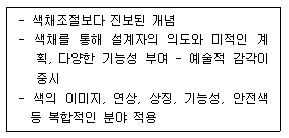
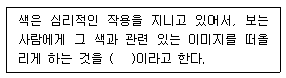
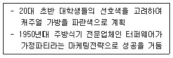
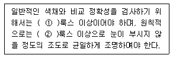
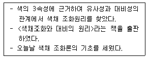
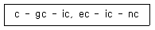

컬러리스트기사 (2013-06-02 기출문제)
1과목: 색채심리 마케팅
1. 보기에서 설명하는 개념은?

- 색채계획
- 색채심리
- 색채과학
- 환경색채
(정답률: 71%)

2. SD법에 대한 설명이 틀린 것은?
- 좋아하는 차례로 순위를 매겨서 조사하는 방법이다.
- 형용사의 반대어 쌍을 사용한다.
- 이미지 조사 방법 중의 하나이다.
- 다차원적인 의미 공간에서 대상을 비교할 수 있게 한다.
(정답률: 75%)
3. 연령에 따른 색채기호를 설명한 것으로 틀린 것은?
- 연령에 따른 색채기호의 차이는 명도와 채도의 의해 나타난다.
- 선명한 색과 밝은 색에 대한 선호도는 연력의 증가에 따라 높아진다.
- 저채도, 중명도, 이하의 색에 대한 선호도는 연령과 함께 높아진다.
- 60대 이상은 파랑이나 하늘색, 흰색 검정색에 대한 선호도가 낮다.
(정답률: 55%)
4. 1920년 미국 파커사의 빨간색 만년필이 시초이며, 당시로서는 파격적인 빨간색을 도입하여 여성용 만년필 시작을 석권한 것과 관련된 개념은?
- 색채 계획
- 문화지향성 색채
- 소비자 유행 심리
- 색채 마케팅
(정답률: 55%)
5. ( )에 들어갈 적합한 용어는?

- 연상(聯想)작용
- 체각(體覺)작용
- 소구(訴求)작용
- 기호(嗜好)작용
(정답률: 93%)
6. 일반적으로 분홍 파스텔 색상을 보면 포근함과 달콤함을 느끼는 감각간의 교류현상은?
- 색채의 심리효과
- 색채의 마케팅 효과
- 색채의 동시대비
- 색채의 공감각
(정답률: 29%)
7. 색채조절(Color Conditioning)의 실행을 위한 방법과 거리가 먼 것은?
- 색채의 심리학적 관점 이용
- 색채의 미학적 관점 이용
- 색채의 주관적 관점 이용
- 색채의 생리학적 관점 이용
(정답률: 50%)
8. 색채를 조절할 때 기능을 최고도로 발휘할 수 있도록 색을 선택, 부여하는 효과와 가장 관련이 없는 것은?
- 운동감
- 심미성
- 연색성
- 대비효과
(정답률: 13%)
9. 다음 보기가 공통적으로 설명하는 것은?

- 기술, 자연적 환경
- 사회, 문화적 환경
- 심리, 행동적 환경
- 인구통계적, 경제적 환경
(정답률: 42%)
10. 브랜드 이미지 전략으로 옳지 않은 것은?
- 포괄적인 이미지 표현에 의한 친근감을 부여
- 시대적인 시장 세분화에 의한 고객욕구에 일치
- 상품특성이 잘 반영되고 신뢰감을 주는 이미지 구축
- 의미를 고려한 독창적이고, 타깃 고객들로부터 우호적인 이미지를 구축
(정답률: 31%)
11. 프랑스와 일본 등에서 각 도시와 마을의 지역색 연구를 통하여 국가전체의 정체성을 추구한 색채연구가는?
- 레미몬드 로이
- 라즐러 모호리나기
- 만 레이
- 장 필립 랑클로
(정답률: 44%)
12. 브랜드를 구성하는 요소 중에서, 시각적으로 형상화 된 표시들은?
- 브랜드 마크(Brand Mark)
- 브랜드 네임(Brand Name)
- 브랜드 셰어(Brand Share)
- 브랜드 미션(Brand Mission)
(정답률: 65%)
13. 기업이미지 구축을 위한 색채계획에서 가장 우선적으로 고려하는 것은?
- 선호색
- 상징성
- 잔상효과
- 실용성
(정답률: 71%)
14. 안전색채에 대한 설명이 틀린 것은?
- 제품 안전 라벨에 안전색을 사용하는 것은 주목성을 높이기 위해서이다.
- 안전표지에서 위험은 위험도가 높음을, 경고는 위험도가 중간 정도임을, 주의는 안전한 상태임을 표시한다.
- 안전색은 색맹이나 색약, 노안과 같은 색각 이상자에게도 잘못 해석이 될 여지와 혼돈의 염려가 적은 색을 골라야 한다.
- 안전색채는 안전표지의 모양에 맞추어 사용되지만 일반적으로 다른 물체의 색과 쉽게 식별되어야 한다.
(정답률: 84%)
15. 소비자의 광고수요에 의한 구매의사 결정과정으로 옳은 것은?
- 주의 → 흥미 → 욕구 → 기억 → 행위
- 주의 → 욕구 → 기억 → 흥미 → 행위
- 기억 → 흥미 → 주의 → 욕구 → 행위
- 주의 → 기억 → 요구 → 흥미 → 행위
(정답률: 67%)
16. 특정 시기에 대량으로 팔린 상품색으로, 실제 판매색 뿐 아니라 제안단계의 색을 포함하는 개념은?
- 표본 추출색
- 소비자 심리색
- 유행색
- 지역색
(정답률: 75%)
17. 입지전적으로 기업을 크게 성장시킨 기업가와 성공비결을 알아보기 위하여 그 기업가에 대해 집중적인 연구를 하는 방법은?
- 상관연구법
- 실험법
- 사례연구법
- 내용분석법
(정답률: 73%)
18. 컬러 마케팅에 대한 설명 중 틀린 것은?
- 색채를 이용한 판매 전략이다.
- 색의 효과를 시장상황과 분리하는 경영기법이다.
- 제품의 색을 전략적으로 활용한다.
- 제품 구매력의 강화요인으로 색을 설정한다.
(정답률: 86%)
19. 시장 세분화 기준의 분류가 잘못된 것은?
- 지리적 변수 : 지역, 인구밀도
- 심리적 변수 : 생활환경, 종교
- 인구학적 변수 : 소득, 직업
- 행동분석적 변수 : 사용경험, 브랜드 충성도
(정답률: 73%)
20. 샘플량의 방법으로 임의 추출 또는 랜덤 샘플링이라고도 하며 조사 대상을 전체를 조사하는 대신, 일부분을 조사함으로써 전체를 추량하는 조사 방법은?
- 무작위추출법
- 다단추출법
- 국화추출법
- 계통추출법
(정답률: 67%)
2과목: 색채디자인
21. 동기화, 쌍방향성, 상호작용 등이 특징인 디자인 분야는?
- 일러스트레이션
- 컴퓨터그래픽
- 광고디자인
- 멀티미디어 디자인
(정답률: 70%)
22. 불완전한 형이나 그룹들을 완전한 형이나 그룹으로 완성시키려는 경향이 있으며, 익숙한 선과 형태는 불완전한 것보다 완전한 것으로 보이기 쉬운 시각적 원리는?
- 근접성
- 유사성
- 폐쇄성
- 연속성
(정답률: 59%)
23. 세계화의 지역화가 강하게 대두되면서 중요한 디자인 요소로 비중이 높아가고 있는 것은?
- 질서성
- 합리성
- 문화성
- 심미성
(정답률: 73%)
24. 패션디자인 분야는 유행의 흐름과 유행색에 많은 영향을 받는다. 국제 유행색위원회인 인터컬러(INTER-COLOR)에 대한 설명으로 옳은 것은?
- 실 시즌의 12개월 전에 런던에서 발표된다.
- 실 시즌의 12개월 전에 밀라노에서 발표된다.
- 실 시즌의 24개월 전에 파리에서 발표된다.
- 실 시즌의 24개월 전에 뉴욕에서 발표된다.
(정답률: 47%)
25. 다음 중 옥외광고에 속하지 않는 것은?
- 애드벌룬
- 옥상간판
- 패키지
- 네온사인
(정답률: 80%)
26. 다음 중 저탄소 녹색 디자인의 요소로 가장 거리가 먼 것은?
- 인간 친화적 디자인
- 에너지절감 디자인
- 재활용 디자인
- 자연통풍 디자인
(정답률: 50%)
27. 디자인 원리에 관한 설명으로 틀린 것은?
- 시각적 통일성을 얻으려면 전체가 부분보다 돋보여야 한다.
- 시각적 리듬감은 강한 좌우 대칭의 구도에서 쉽게 찾아진다.
- 부분과 부분 혹은 부분과 전체 사이에 안정적인 연관성이 보일 때 조화가 이루어진다.
- 종속은 주도적인 것을 끌어당기는 상대적인 힘이 되어 전체에 조화를 가져온다.
(정답률: 42%)
28. 우리나라의 문화적 특징 및 디자인 경향에 대한 설명 중 틀린 것은?
- 단순성, 기능주의 축소주의 디자인을 중요시
- 백색에 대한 동경보다는 무(無)장식에 대한 애정으로 백색을 사용
- 무작위성을 추구하고 조화와 융통성의 균형 유지
- 미완성의 자연스러운 멋 추구
(정답률: 10%)
29. 디자인 사조에 대한 설명이 틀린 것은?
- 키치는 저속한 모방예술을 의미한다.
- 아방가르드는 급격한 진보적 성형을 일컫는다.
- 미니멀리즘은 개성적인 성격, 극단적인 간결성, 기계적인 엄밀성이 특징이다.
- 구성주의는 광고, 상표, 만화, 영화 등의 대중적 이미지를 시각적으로 재현하였다.
(정답률: 47%)
30. 다음 중 신문광고에 대한 설명으로 틀린 것은?
- 광고 집행 절차가 간단하다.
- 다른 대중매체에 비해 신뢰도가 높다.
- 전파매체에 비해 보존성이 우수하다.
- 표적소비자를 대상으로 선별적 광고가 가능하다.
(정답률: 37%)
31. 다음 중 디자인의 개념과 가장 거리가 먼 것은?
- 디자인은 생활의 예술이다.
- 디자인은 사회적 과정이다.
- 디자인은 항상 어떤 가능성을 전제로 시작한다.
- 디자인은 신비한 능력이다.
(정답률: 58%)
32. 교통안전 사인 시스템에서 경고의 의미와 명시성을 이용한 색채는?
- 초록
- 노랑
- 검정
- 파랑
(정답률: 58%)
33. 포스트모던 디자인의 특징이 아닌 것은?
- 대량생산
- 유머와 위트, 장식성의 회복
- 예술, 공예, 디자인의 장르 허물기
- 형태는 재미를 따름
(정답률: 31%)
34. 색채를 이용한 C.I.도입의 효과가 아닌 것은?
- 유행색의 제안
- 경쟁우위 확보
- 기업의 이미지 향상
- 기업의 철학과 전략의 통합
(정답률: 69%)
35. 디자인 사조(思潮)에 대한 설명이 옳은 것은?
- 미술공예운동은 윌리엄 모리스의 노력에 힘입어 19c후반 예술성을 지향하는 몇몇 길드(Guild)와 새로운 세대의 건축가, 공예 디자이너에 의해 성장하였다.
- 플럭서스(Fluxus)란 원래 낡은 가구를 주워 모아 새로운 가구를 만든다는 뜻으로 저속한 모방예술을 의미한다.
- 바우하우스(Bauhaus)는 신조형주의 운동으로 개성을 배제하는 주지주의적 추상미술운동이다.
- 다다이즘(Dadaism)의 화가들은 자연적 형태는 기하학적인 동일체의 방향으로 단순화시키거나 세련되게 할 수도 있다고 하였다.
(정답률: 25%)
36. 점이, 점증, 반복, 강조, 강약과 관련된 디자인의 원리는?
- 조화
- 리듬
- 균형
- 변화
(정답률: 67%)
37. 팝아트(Pop Art)에 관한 설명 중 옳은 것은?
- 인간의 시지각 원리에 근거한 것이다.
- 대중예술로서 유래된 말로, 1960년대에 뉴욕을 중심으로 전개되었던 미술의 한 경향을 가리킨다.
- 여성의 주체성을 찾고자 한 운동이다.
- 분해, 풀어헤침 등 파괴를 지칭하는 행위이다.
(정답률: 72%)
38. 일반적인 색채계획 및 디자인 프로세스를 조사·기획, 색채계획·설계, 색채관리로 분류할 때 색채계획·설계에 해당되지 않는 것은?
- 체크리스트 작성
- 색채 구성 배색 안 작성
- 시뮬레이션 실시
- 색견본 승인
(정답률: 60%)
39. 다음 중 '제품과 디자인에 대하여 사람마다 자기 나름대로 사용 방법을 선택할 수 있게 하여 여러 사람들에게 무리 없이 맞아야 한다.'와 관련한 유니버셜 디자인 원칙은?
- 직관적 사용성
- 공정한 사용성
- 융통적 사용성
- 효과적 정보전달
(정답률: 58%)
40. 다음 중 디자인 기본조건이 아닌 것은?
- 합목적성
- 심미성
- 복합성
- 경제성
(정답률: 79%)
3과목: 색채관리
41. 올바른 색관리를 위한 모니터의 설명 중 옳은 것은?
- 정확한 컬러 매칭을 위해서는 가능한 밝고 콘트라스트가 높은 모니터가 필요하다.
- 정확한 컬러 조절을 위하여 모니터는 자연광이 잘 들어오는 곳에 배치하여야 한다.
- 정확한 컬러를 보기 위해서 모니터의 휘도와 화이트포인트는 주변 환경과 관계없이 일정하게 설정하여야 한다.
- 정확한 컬러를 보기 위해서는 모니터를 캘리브레이션하고 그 프로파일 정보를 인식 가능한 이미징 프로그램을 사용하여야 한다.
(정답률: 54%)
42. CCM(Computer Color Matching)의 활용 시 장점은?
- 시염 횟수가 감소하며, 염색 과정을 수치로 관리하여 보정 계산의 정도를 향상시킨다.
- 조명 광원의 변화에 따른 물체의 분광반사율 변화를 측정할 수 있다.
- CRM(Certified Reference Material)의 훼손을 방지하고 절대반사율 표준을 보다 오래 유지할 수 있다.
- 관측자의 시각에 근접한 조건에서 색을 감지할 수 있기때문에 오차를 배제할 수 있다.
(정답률: 34%)
43. 안료에 대한 설명이 틀린 것은?
- 백색안료 중에는 바라이트, 호분, 백악, 클레이, 석고 등의 체질안료가 있다.
- 안료는 성분에 따라 무기안료와 유기안료로 분류한다.
- 무기안료 중에는 백색의 색조를 띠는 백색 안료가 많으며, 다른 안료에 비해 빛깔이 선명하고 착색력도 좋으며 임의의 색조를 얻을 수 있다.
- 유기안료는 무기안료에 비해 빛깔이 선면하고 착색력도 좋으며 임의의 색조를 얻을 수 있다.
(정답률: 59%)
44. 흐린 날의 자연광과 유사한 특성을 갖는 산란광원을 사용할 때 색채관측의 유리한 점은?
- 일정한 표면반사 성분이 포함된 색채가 관측된다.
- 표면반사에 의한 광택이 없어 관측이 자유롭다.
- 시료를 비교할 때 조명조건을 자유롭게 조절할 수 있다.
- 형광현상이 적어진다.
(정답률: 36%)
45. 일반적인 컬러 프린터 잉크로 사용하기에 적합한 기본 원색들은?
- Red, Green, Blue
- Cyan, Magenta, Yellow
- Red, Yellow, Blue
- Cyan, Magenta, Red
(정답률: 82%)
46. 다음 중 형광색과 관계가 없는 색채는?
- 적외선 위장색
- 야간도로교통 표시색
- 해양에서의 구조복의 색
- 교정치아의 색채
(정답률: 10%)
47. 반투명의 유리나 플라스틱을 사용하여 광원 빛의 60 ~ 90%가 대상체의 직접 조사되는 방식으로, 그림자와 눈부심이 생기는 조명방식은?
- 전반확산조명
- 직접조명
- 반간접조명
- 반직접조명
(정답률: 24%)
48. 조건등색(Metamerism)에 대한 설명 중 틀린 것은?
- 조명에 따라 두 견본이 같게도 다르게도 보인다.
- 모니터에서 색 재현은 조건 등색에 해당한다.
- 사람의 시감 특성과는 관련이 없다.
- 분광 반사율이 같은 두 견본은 항상 같은 색으로 보인다.
(정답률: 47%)
49. 분광반사율에 대한 설명으로 틀린 것은?
- 회색계통의 색들은 반사율이 동일하게 나타난다.
- 밝은 색일수록 전반적으로 반사율이 높다.
- 채도가 높은 선명한 색일수록 분광 반사율의 파장별 차이가 크다
- 반사율은 색채 시료의 특성에 따라 다르게 나타난다.
(정답률: 50%)
50. 어떤 색채가 매체, 주변색, 조도의 조건변화 등에 따라 다르게 보여지는 색의 속성을 정확히 예측해 주어 문제점을 해결할 수 있도록 개발된 색채이론(Model)은?
- 디바이스 특성화(Device Characterization)
- 아이소머리즘(Isomerism)
- 컬러어피어런스(Color Apperance)
- 컬러디퍼런스(Color Difference)
(정답률: 50%)
51. 플라스틱 소재의 장점이 아닌 것은?
- 착색과 가공이 용이하다.
- 다른 재료에 비해 가볍다.
- 자외선에 강하다.
- 전기 절연성이 우수하다.
(정답률: 84%)
52. ( )안의 내용으로 가장 적합한 것은?

- ① 500, ② 1000
- ① 1000, ② 2000
- ① 500, ② 2000
- ① 1000, ② 500
(정답률: 25%)
53. 광택도는 물체 표면의 정반사광의 강도에 따른 표면의 반사형태를 수치로 표시하는 방법이다. 다음 중 틀린 것은?
- Black Glass의 광택을 기준으로 설정한다.
- 수치가 적을수록 광택량은 많아진다.
- 광택을 측정하는 기준각도가 정해져 있다.
- 제지산업 등에서 많이 활용한다.
(정답률: 24%)
54. 한국산업표준(KS)에 없는 색채 표시체계는?
- CIE XYZ
- Munsell System
- P.C.C.S
- CIE LAB
(정답률: 75%)
55. 색차식이 한국산업표준 KS A 0063에 기록되지 않은 것은?
- 아담스 니커슨
- 헌터
- CIEDE2000
- FMC-11
(정답률: 알수없음)
56. 모니터나 프린터, 인터넷을 위한 표준 RGB 색공간을 지칭하는 용어는?
- BT. 709
- NTSC
- sRGB
- RAL
(정답률: 79%)
57. 컴퓨터 자동배색(CCM)은 색료의 분광특성을 바탕으로 색채처방을 산출하는 장비이다. 이 때 색료의 분광특성은 어떤 형태로 입력되는 것인가?
- 단위 농도당 분광반사율의 변화
- 단위 농도당 색좌표의 변화
- 단위 농도당 흡수피크의 변화
- 단위 농도당 채도의 변화
(정답률: 50%)
58. 디지털 색채에 대한 설명으로 틀린 것은?
- 픽셀은 기본 화소 단위이다.
- 비트는 하나의 픽셀에 대한 색의 정밀도이다.
- 모니터의 크기가 증가할수록 인치당 픽셀 수는 많아진다.
- 디지털 입력 시 표현되는 영상의 정밀도는 픽셀 수로 표기한다.
(정답률: 15%)
59. 육안조색의 조색 방법 중 틀린 것은?
- 시편의 색채를 D65광원을 기준으로 조색한다.
- 샘플색이 시편의 색보다 노란색을 띨 경우, a*값이 낮은 도료나 안료를 섞는다.
- 샘플색이 시편의 색보다 붉은색을 띨 경우, b*값이 낮은 도료나 안료를 섞는다.
- 조색 작업면은 검정색으로 도색된 환경에서 20001x 조도의 밝기를 갖추도록 한다.
(정답률: 55%)
60. 색차와 소재에 관한 설명으로 틀린 것은?
- 천연색소는 색이 선명하고 빛, 공기, pH등에 대한 안전성이 우수하다.
- 색료의 소재와 착색방법에 따라 색료를 염료와 안료로 나눈다.
- 안료는 착색을 위하여 일조의 접착제가 필요하다.
- 염료의 경우는 대체적으로 색소가 다른 물질에 흡착 또는 결합하기 쉽다.
(정답률: 75%)
4과목: 색채지각론
61. 다음 중 양성적 잔상에 대한 설명으로 옳은 것은?
- 원래의 자극과 같은 색으로 느껴지기는 하나 밝기는 다소 감소되는 경우를 '푸르킨예의 잔상'이라 한다.
- 원래의 자극과 밝기는 같으나 색상은 보색으로, 채도는 감소되는 경우를 '헤링의 잔상'이라 한다.
- 원래의 자극과 같은 정도의 밝기이나 색상의 변화를 느끼는 경우를 '코프카의 전시야'라 한다.
- 원래의 자극과 같은 자극의 정도로 지속으로 느껴지는 경우를 '스윈들의 유령'이라 한다.
(정답률: 34%)
62. 연령이 높아질수록 가장 약하게 인지되는 파장은?
- 400nm
- 500nm
- 600nm
- 700nm
(정답률: 54%)
63. 다음 중 주목성의 대소 관계가 잘못 짝지어진 것은?
- 유채색 ＞ 무채색
- 고채도 ＞ 저채도
- 빨강 ＞ 파랑
- 차가운 색 ＞ 따뜻한 색
(정답률: 80%)
64. 순응에 대한 설명이 틀린 것은?
- 순응이란 조명조건이 변화함에 따라 수용기의 민감도가 변화하는 것을 말한다.
- 터널 내 조명설치 간격은 명암순응현상과 관련이 있다.
- 조도가 낮아지면서 시인도는 장파장인 노랑보다 단파장인 파랑이 높아진다.
- 박명시는 추상체와 간상체 모두 활동하고 있는 시각 상태로 시각적인 정확성이 높다.
(정답률: 54%)
65. 다음 중 색의 후퇴에 대한 설명 중 틀린 것은?
- 차가운 색이 따뜻한 색보다 더 후퇴하는 느낌을 준다.
- 어두운 색이 밝은 색보다 더 후퇴하는 느낌을 준다.
- 명도·채도가 높은 색이 명도·채도가 낮은 색보다 더 후퇴하는 느낌을 준다.
- 무채색이 유채색보다 더 후퇴하는 느낌을 준다.
(정답률: 94%)
66. 연변대비에 의한 효과를 감소시키고자 할 때 적합한 방법은?
- 채색 후의 색을 고려하여 명도와 채도를 조금 낮게 설정한다.
- 두 색 사이의 무채색을 사용한다.
- 두 색을 더욱 인접시킨다.
- 두 색 사이의 다른 유채색을 사용한다.
(정답률: 73%)
67. 청록과 노랑으로 구성된 그림을 집중해서 보다가 흰 벽을 쳐다보면 보이는 잔상의 색은?
- 시안과 노랑
- 빨강과 파랑
- 주황과 녹색
- 자주와 보라
(정답률: 75%)
68. 중간혼색에 대한 설명이 틀린 것은?
- 눈의 망막에서 일어나는 착시적 혼합이다.
- 중간혼색의 결과로 보이는 색의 밝기는 혼합된 색들의 평균적인 밝기이다.
- 병치혼색의 예로 점묘파 화가들은 색물감을 캔버스 위에 혼합되지 않은 채로 찍어서 그림을 그렸다.
- 보색관계의 혼합은 회색이 되는 회전혼색은 물체색을 통한 혼색이나 감법혼색에 속한다.
(정답률: 60%)
69. 다음 중 카메라에 쓰는 UV필터와 관련이 있는 파장은?
- 적외선
- X-선
- 자외선
- 감마선
(정답률: 0%)
70. 작은 면적의 회색이 채도가 높은 유채색으로 둘러싸일 때 회색이 유채색의 보색 색상을 띠어 보이는 것은?
- 색음현상
- 애브니효과
- 피프만 효과
- 베졸트 브뤼케 현상
(정답률: 46%)
71. 백색광 아래에서 노란색으로 보이는 물체를 청록색 광원 아래로 옮기면 어떤 색으로 지각 되는가?
- 청록색
- 흰색
- 빨간색
- 초록색
(정답률: 17%)
72. 다음 중 명도가 다른 두 회색 사이의 색차를 가장 잘 보이게 하는 배경색은?
- 두 색 보다 어두운 유채색
- 두 색의 중간에 위치하는 무채색
- 두 색보다 어두운 무채색
- 두 색보다 밝은 유채색
(정답률: 19%)
73. 유리병 속의 액체나 얼음 덩어리의 색은 어떤 색의 분류에 속하는가?
- 경영색
- 표면색
- 공간색
- 간섭색
(정답률: 53%)
74. 동일한 색이라도 면적이 커지게 되었을 때 나타나는 현상은?
- 변화없음
- 명도는 증가, 채도는 감소됨
- 명도, 채도가 모두 증가됨
- 명도, 채도가 모두 감소됨
(정답률: 48%)
75. 중간혼색 중 병치혼색 효과를 이용한 예가 아닌 것은?
- 컬러텔레비전
- 점묘기법의 표현
- 직물의 색조 디자인
- 색필터의 혼합
(정답률: 46%)
76. 빛에 관한 설명 중 옳은 것은?
- 뉴턴의 빛의 간섭 현상을 이용하여 백색광을 분해하였다.
- 분광되어 나타나는 여러 가지 색의 띠를 스펙트럼이라고 한다.
- 색광 중 가장 밝게 느껴지는 파장의 영역은 400 ~ 450nm 이다.
- 전자기파 중에서 사람의 눈에 보이는 파장의 범위는 780 ~ 980nm이다.
(정답률: 84%)
77. 색의 혼합에 대한 설명 중 틀린 것은?
- 2장 이상의 색 필터를 겹친 후 뒤에서 빛을 비우었을 때의 혼색을 감법혼색이라 한다.
- 여러 종류의 색자극이 눈의 망막에서 겹쳐져 혼색되는 것을 가법혼색이라 한다.
- 색자극의 단계에서 여러 종류의 색자극을 합성한 후 합성된 색자극을 하나의 색으로 지각하는 것을 생리적혼색이라 한다.
- 가법혼색은 컬러인쇄의 색분해에 의한 네거필름의 제조와 무대조명 등에 활용된다.
(정답률: 20%)
78. 세단계의 무채색을 서로 이웃하여 놓았을 때, 색의 경계부분에서 강하게 일어나는 대비 현상은?
- 색상대비
- 연변대비
- 채도대비
- 명도대비
(정답률: 39%)
79. 적벽돌 색으로 건물을 지을 경우 벽돌 사이의 줄눈 색상에 의해 색의 변화를 다르게 느낄 수 있는 것과 관련이 있는 것은?
- 연변대비 효과
- 한난대비 효과
- 베졸드 효과
- 잔상 효과
(정답률: 60%)
80. 스펙트럼 분광색의 파장 길이가 짧은 것에서 긴 순서로 옳게 나열된 것은?
- 노랑 ＜ 파랑 ＜ 주황
- 빨강 ＜ 초록 ＜ 보라
- 보라 ＜ 빨강 ＜ 노랑
- 파랑 ＜ 초록 ＜ 노랑
(정답률: 42%)
5과목: 색채체계론
81. 먼셀 색체계의 채도에 대한 설명 중 옳은 것은?
- 그레이 스케일이라고 한다.
- 먼셀 색입체에서 수직축에 해당한다.
- 채도의 변화가 증가하면 점점 선명해진다.
- Neutral의 약자를 사용하여 N1, N2 등으로 표기한다.
(정답률: 55%)
82. 다음 중 색채의 기하학적 대비와 규칙적인 색상의 배열 그리고 계절감을 색상의 대비를 통하여 표현한 것이 특징인 색채조화론은?
- 비렌의 색채조화론
- 오스트발트의 색채조화론
- 저드의 색채조화론
- 이텐의 색채조화론
(정답률: 17%)
83. 먼셀 기호 5YR 8.5/13에 대한 설명이 옳은 것은?
- 명도는 8.5이다.
- 색상은 붉은 기미의 보라이다.
- 채도는 5/13이다.
- 색상은 YR 8.5이다.
(정답률: 79%)
84. 다음 중 자연현상에서 따온 관용색명이 아닌 것은?
- 하늘색
- 황토색
- 무지개색
- 물색
(정답률: 10%)
85. 수정 먼셀 색체계의 표준색표 구성에 대한 설명으로 옳은 것은?
- 명도 0과 명도 10에 해당하는 검정과 흰색은 실재하는 색으로 N0에서 N10까지의 명도단계를 가진다.
- 채도는 /1, /2, /3, /4, /5, /6,/7,…,/14 등과 같이 1단위로 되어 있다.
- 100 색상환으로 구성되어 있으며, R의 경우 1R이 순색의 빨강으로 해당된다.
- 40색상에 대한 명도별, 채도별로 배열한 등색상면을 1장으로 하여 40장의 등색상면으로 구성되어 있다.
(정답률: 19%)
86. 국제조명위원회에서 개발된 색체계에 대한 설명으로 틀린 것은?
- 1931년 감법혼색에 의해 CIE색체계를 만들었다.
- 물체색 뿐 아니라 빛의 색까지 표기할 수 있다.
- 광원과 관찰자에 대한 정보를 표준화하고, 색을 수치화하였다.
- 물체색이 광원에 따라 달라지는 것을 보완한 것이다.
(정답률: 54%)
87. 오간색과 방위의 위치연결이 올바른 것은?
- 녹색 - 동방과 중앙 사이
- 홍색 - 동방과 서방 사이
- 벽색 - 동방과 남방 사이
- 유황색 - 북방과 남방 사이
(정답률: 59%)
88. NCS색체계의 S4⑤0-R90B에 포함되어 있는 백색의 양은?
- 10%
- 40%
- 50%
- 90%
(정답률: 34%)
89. 다음 중 각 색체계의 특징을 잘못 설명한 것은?
- CIE L*a*b* 색체계는 객관성을 유지할 수 있으며, 세밀한 측색과 관리 및 조색이 가능하다.
- 먼셀 색체계는 눈으로 확인하고 조색표를 만들어야하므로 색표집이 필요 없다.
- CIE L*u*v*는, 삼원색의 가산 혼합방법에 기초한 CIE XYZ 체계가 수학적으로 변형된 것이다.
- R.C.C.S는 오스트발트 색체계에 톤을 적용하여 간략하게 표현한 것이므로 혼색계이다.
(정답률: 34%)
90. 세계 각국의 색채표준화 작업을 통한 제시된 색채체계와 그 특성을 바르게 연결한 것은?
- 혼색계 - CIE의 XYZ 색체계 - 색자극의 표시
- 현색계 - 오스트발트 색체계 - 관용색명 표시
- 혼색계 - 먼셀 색체계 - 색채교육
- 현색계 - NCS 색체계 - 조화색의 선택
(정답률: 63%)
91. DIN 색체계와 가장 유사한 색상 구조를 갖는 색체계는?
- Munsell 색체계
- NCS 색체계
- Yxy 색체계
- Ostwald 색체계
(정답률: 12%)
92. 다음 중 P.C.C.S 색상 기호, 색상명, 먼셀 색상이 순서대로 바르게 짝지어진 것은?
- 2:R - red - 1R
- 10:YG - yellow green - 8G
- 20:V - violet - 9PB
- 6:y0 - yellowish orange - 1R
(정답률: 39%)
93. 보기의 설명과 관련 있는 색채 조화론 학자는?

- 루드(O. N. Rood)
- 쉐브럴(M. E. Chevreul)
- 저드(D. B Judd)
- 비렌(Faber Birren)
(정답률: 25%)
94. NCS에 대한 설명으로 틀린 것은?
- 스웨덴 색채연구소에서 만들었다.
- 헤링의 이론을 바탕으로 한다.
- 색삼각형은 검정색도, 하양색도, 유채색도를 설명한다.
- NCS 색상환의 4가지 기존색은 Y, R, V, G이다.
(정답률: 53%)
95. 전통색에 대한 설명으로 옳은 것은?
- 어떤 민족의 정체성을 나타낼 수 있는 색이다.
- 특정지역에서 특정시기에 두드러지게 나타나는 색이다.
- 색의 기능을 매우 중요한 속성으로 하는 색이다.
- 사회의 특정 계층에서 지배적으로 사용하는 색이다.
(정답률: 80%)
96. 다음 오스트발트 색표배열은 어떤 조화의 유형인가?

- 유채색과 무채색의 조화
- 순색과 배색의 조화
- 등흑계열의 조화
- 순색과 흑색의 조화
(정답률: 54%)
97. 한국산업표준 물체색의 색이름(KS A0011)에 관한 설명으로 틀린 것은?
- 무채색의 수식형용사는 '밝은'과 '어두운'이며, 필요시 "아주"를 수식형용사 앞에 붙여 사용할 수 있다.
- 조합색이름의 앞에 붙는 색이름을 색이름 수식형, 뒤에 붙는 색이름을 기준 색이름이라고 부른다.
- 기본색 이름의 한자 단음절은 적, 황, 녹, 청, 남, 자, 갈, 백, 회, 흑이다.
- 수식형이 없는 2음절 색이름에 붙인 수식형 "빛"(초록빛, 보랏빛 등)은 광선을 의미한다.
(정답률: 알수없음)
98. 색의 속성에 대한 설명으로 틀린 것은?
- 색의 3속성을 3차원적인 공간에다 계통적으로 배열한 것이 색입체이다.
- 채도는 색의 밝기로 나눌 때의 요소가 되는 분광 반사율에 의해서 느낀다.
- 색의 3속성은 색상, 명도, 채도이다.
- 색상은 색의 종류로 나눌 때의 요소가 되는 주파장에 의해서 느낀다.
(정답률: 57%)
99. 문·스펜서 색채조화론의 M = 0/C 공식에서 M이 의미하는 것은?
- 질서
- 명도
- 복잡성
- 미도
(정답률: 45%)
100. L*a*b* 색공간에서 L*값이 증가함에 따라 증가하는 속성은?
- 색상
- 명도
- 채도
- 색차
(정답률: 50%)